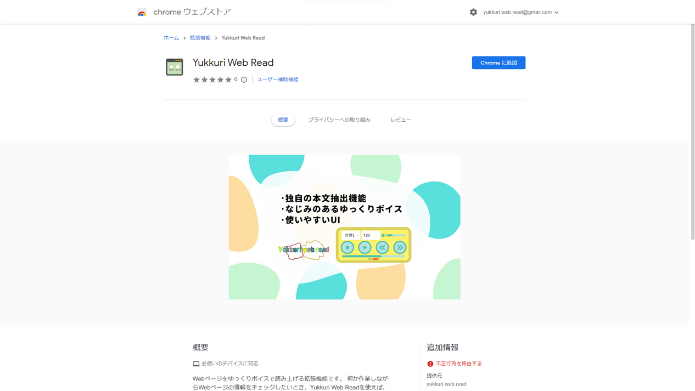
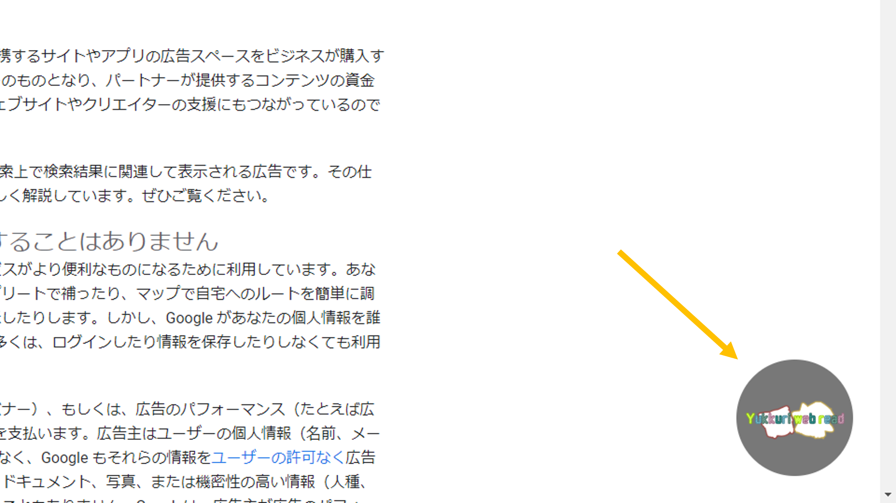
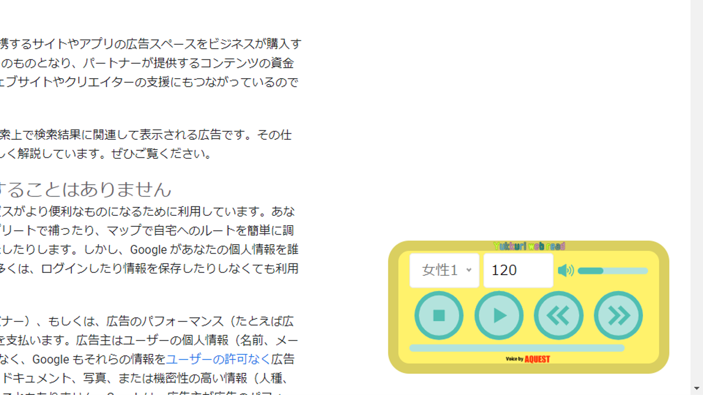
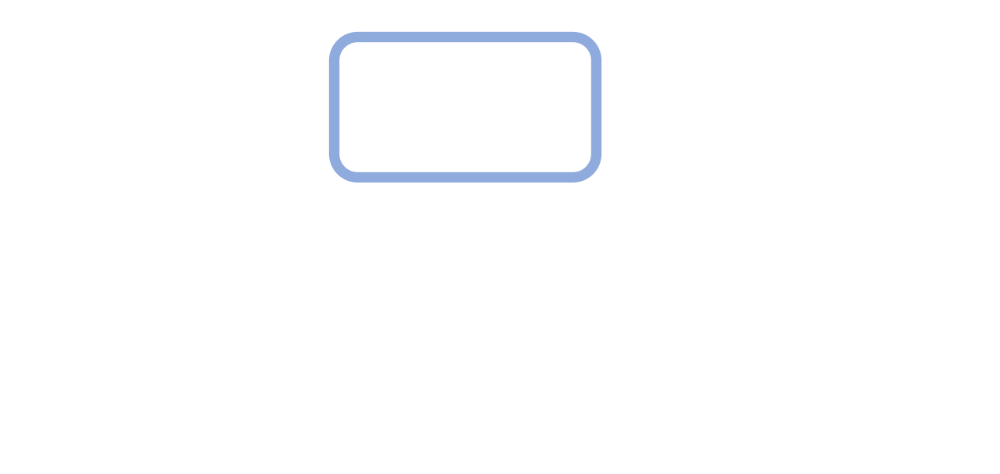
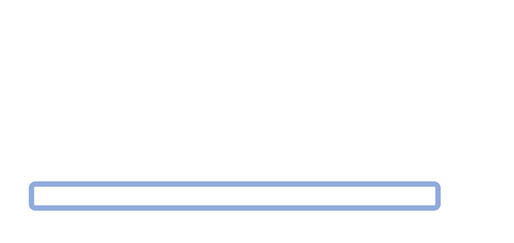

Yukkuri Web Read
Yukkuri Web Readとは何ですか?
Webページをゆっくりボイスで読み上げるChrome拡張機能です。

Yukkuri Web ReadはどのようにChromeに追加しますか?
chromeウェブストアのYukkuri Web Readのページから拡張機能をダウンロードします。
Yukkuri Web Readはどのように使用しますか?
-
導入すると、Webページの右下にが表示されます

それをクリックすると、

このようなコントロールパネルが表示されます。コントロールパネルの使い方
ボイス
ゆっくりボイスの種類を選択します。 種類:女性1,女性2
スピード
読み上げのスピードを設定します。

音量
音量をドラッグ&ドロップまたはクリックして設定できます。
停止
再生をストップして、再生位置を0にします。
再生をストップして、再生位置を0にします。
再生 / 停止
クリックで再生,停止を切り替えます。
停止状態
再生状態
マイナススキップ
再生位置を10秒前に移動させます。
スキップ
再生位置を10秒後に移動させます。

再生バー
ドラッグ&ドロップまたはクリックで、再生位置を変更します。
 - コントロールパネルは、サイトをリロードすることで非表示にすることができます。
Yukkuri Web Readはどのようにゆっくりボイスを生成しますか?
サーバーにサイトのテキストを送信し、生成します。 生成された音声ファイルは、約10分以内に削除されます。 生成されたファイルが、他の目的で使用されることはありません。 また、送信されたテキストを収集することはありません。